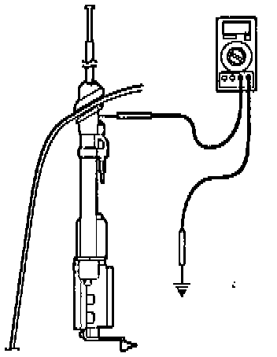
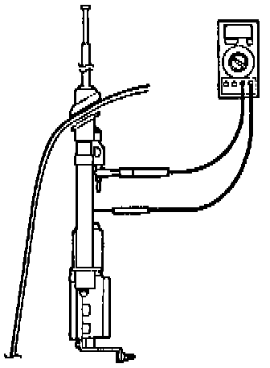

Diagnosis 2. Electrical Noise or Interference
1. Disconnect the coaxial cable from the antenna.
2. Measure the resistance between the antenna collar and body ground.
^ If the resistance is more than 1 ohm, go to CORRECTIVE ACTION, Antenna Collar Replacement.
^ It the resistance is less than 1 ohm, continue with step 3.

3. Measure the resistance between the antenna tube and the outside contact of the antenna jack.
^ If the resistance is more than 1 ohm, go to CORRECTIVE ACTION, Antenna Tube Replacement.
^ If the resistance is less than 1 ohm, continue with Coaxial Cable Test.